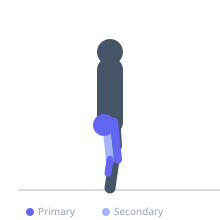
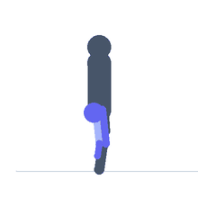

Exercise guide / Alternate Leg Bound
Alternate Leg Bound
Alternate leg bounding is an advanced plyometric drill in which the athlete performs exaggerated, explosive strides — alternating single-leg push-offs and landings across the ground with maximum stride length and height. Each stride resembles a running step taken with maximum power output. It develops unilateral explosive hip extension, stride power, and the stretch-shortening cycle in the hip extensors and plantarflexors, with strong carryover to sprinting acceleration.
Primary muscles
gluteus maximus
rectus femoris
gastrocnemius medial
Secondary muscles
biceps femoris long head
iliacus
Stabilizers
gluteus medius
transverse abdominis
Equipment
No Equipment (Bodyweight)


Starting position
- Begin in a standing position. Transition to movement immediately at the start of the drill.
Setup
- Use a flat, non-slip surface with 30–50 meters of clear running space.
Steps
- Step 1: Begin with a short run-up to initiate momentum.
- Step 2: Drive off the right foot explosively, extending fully through the hip, knee, and ankle.
- Step 3: Drive the left knee high and forward while the right arm mirrors with an aggressive drive.
- Step 4: Land on the left foot and immediately drive off again with equal force.
- Step 5: Continue alternating for the prescribed distance, maximizing each stride's length and height.
Coaching cues
- Drive the knee up and push the ground away
- Swing the arms hard — opposite arm to leg
- Cover ground — big, powerful strides
Breathing
- Breathe rhythmically throughout the drill.
Range of motion
- Maximum stride length and height. Full hip and knee extension at each takeoff.
Tempo
- Performed for 20–40 meter sets. Maximum effort on each stride.
Common mistakes
- Shuffling rather than bounding — each stride must be a true explosive effort
- Insufficient knee lift of the swing leg
- Weak arm drive — the arms contribute significantly to stride power
Safety
- High demand on the Achilles tendon and hamstrings. Not appropriate in the early season or after lower limb injury.
- Progress from single-leg hops before adding alternate leg bounds.
Training
- power: 1–1 reps
- power: 3–6 sets
- Rest: {'power': 180}